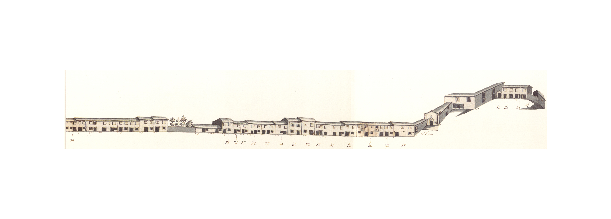
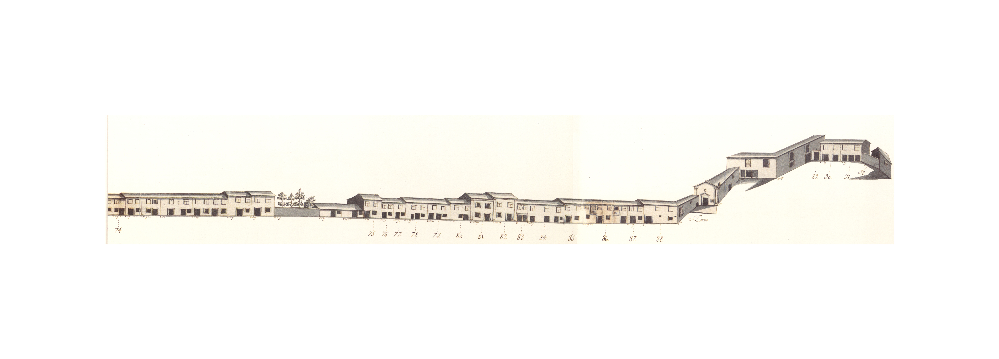
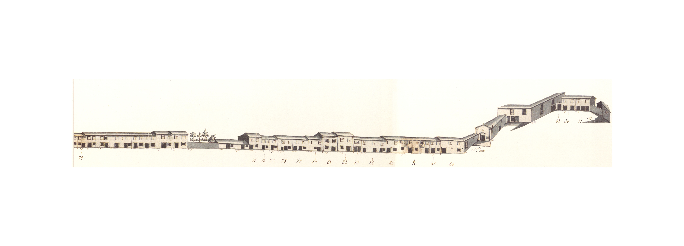
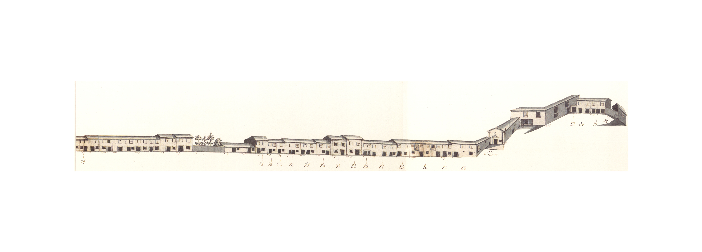

Longa rua que juntamente com as ruas das Ágoas S. Lázaro Arcada ponte de Guimarães
Aberta talvez na Idade Média não nos aparece no Mappa com a importância que deveria ter como via de entrada na cidade de uma estrada antiga e importante, e que no seu limite tinha uma velha ponte.
Em 1750 rua da Ponte
Ao mesmo tempo, e da mesma maneira que a rua de S. Lázaro
No extremo Norte da rua, do lado Poente, ficava a capela de S. Lázaro 1747
Esta rua corresponde hoje ao troço da avenida da Liberdade rua 25 de Abril largo das Latinhas ou do Senhor dos Aflitos
Rua de S. Lázaro Rua de S. Lázaro Rua da Ponte de Guimarães Terreiro de S. Lázaro
O Rua de S. Lázaro Rua da Ponte de Guimarães Terreiro de S. Lázaro
Rua de S. Lázaro 1580
Rua de S. Lázaro 1720
Encontram-se unidas desde 1680
Encontram-se unidas desde 1658
Os Rua Paio Manta 1586
Os Braga Rua Paio Manta Lages 1586
Encontra-se separada do nº 24 desde 1638
Os Rua Paio Manta Lages 1586/
Rua Paio Manta Lages 1586 1631
Os Rua Paio Manta Lages 1586
Encontram-se unidas, numa só escritura de prazo, desde 1586
Ao nº 35 pertence, ainda, todo o quintal que se situa à face da rua.
Os Casal dos Galos Ponte de Guimarães
Os
Foi subemprazada em 1589 Casal dos Galos freguesia de S. José de S. Lázaro
Os 1589
Os Braga 1589 Casal dos Galos
Os Braga 1589 Casal dos Galos
Os 1592 Casal dos Galos
Os 1600 Casal dos Galos
Os 1616 Casal dos Galos
Os 1616 Casal dos Galos
Os 1617 Casal dos Galos
Os 1617 Casal dos Galos
Os 1628 Casal dos Galos Rua da Ponte de Guimarães
Os Rua Paio Manta Lages 1616 Rua da Ponte de Guimarães Lages Pelames
Os subenfiteutas pagam 150 reis pelo quintal ao n° 17 da Rua Paio Manta Lages
Os Rua Paio Manta Lages 1586
Entre os anos de 1586 1654
Os Rua Paio Manta Lages 1647 1684
Pagam 450 reis ao n° 17 da Rua Paio Manta Lages
Pagam 250 reis ao n° 17 da Rua Paio Manta Lages
Pagam 350 reis ao n° 17 da Rua Paio Manta Lages
Pagam 450 reis ao n° 17 da Rua Paio Manta Lages
Os Rua Paio Manta Lages 1637
Esteve unida ao nº 66 entre os anos de 1586 1637
Paga 300 reis ao nº 17 da Rua Paio Manta Lages 1586 1615
Os Rua Paio Manta Lages 1615
Os Rua Paio Manta Lages 1612
Os Rua Paio Manta Lages 1583
Os Rua de S. Lázaro 1720
Os Rua de S. lázaro 1629
Os Rua de S. Lázaro 1726
Estas casas encontram-se unidas desde 1675
A casa nº 88 confronta, do norte, com o Terreiro de S. Lázaro 1584
Braga Rua de S. Lázaro Terreiro de S. Lázaro capela de S. Lázaro
Esta leira pertenceu ao prazo n° 11 da Rua de Trás de S. Marcos (Granjinhos)
Rua de S. Lázaro Capela de D. Gonçalo Pereira
| Número de porta | Enfiteuta |
|---|---|
| 1 e 2 | Lopo de Barros e Almeida |
| 3 | Lopo de Barros e Almeida |
| 4 e 5 | Lopo de Barros e Almeida |
| 6 | Lopo de Barros e Almeida |
| 7 | Lopo de Barros e Almeida |
| 8 | Lopo de Barros e Almeida |
| 9 | Lopo de Barros e Almeida |
| 10 | Lopo de Barros e Almeida |
| 11 e 12 | Lopo de Barros e Almeida |
| 13 | Lopo de Barros e Almeida |
| 14 | Lopo de Barros e Almeida |
| 15 | Lopo de Barros e Almeida |
| 16 e 17 | Lopo de Barros e Almeida |
| 18 e 19 | Lopo de Barros e Almeida |
| 20 | Pedro da Cunha Sottomayor, Alcaide Mor de Braga |
| 21 e 22 | Pedro da Cunha Sottomayor, Alcaide Mor de Braga |
| 23 | Pedro da Cunha Sottomayor, Alcaide Mor de Braga |
| 24 | Pedro da Cunha Sottomayor, Alcaide Mor de Braga |
| 25 e 26 | Pedro da Cunha Sottomayor, Alcaide Mor de Braga |
| 27 | Pedro da Cunha Sottomayor, Alcaide Mor de Braga |
| 28 e 29 | Pedro da Cunha Sottomayor, Alcaide Mor de Braga |
| 30, 31, 32, 33 e 34 | Pedro da Cunha Sottomayor, Alcaide Mor de Braga |
| 35, 36, 37 e 38 | João de Magalhães de Araújo Costa, enfiteuta principal do prazo da metade do Casal dos Galos, que foi de Maria André. |
| 39 | João de Magalhães de Araújo Costa, enfiteuta principal do prazo da metade do Casal dos Galos, que foi de Mateus Rodrigues. |
| 40 | João de Magalhães de Araújo Costa, enfiteuta principal do prazo da metade do Casal dos Galos, que foi de Mateus Rodrigues. |
| 41 | João de Magalhães de Araújo Costa, enfiteuta principal do prazo da metade do Casal dos Galos, que foi de Mateus Rodrigues. |
| 42 | João de Magalhães de Araújo Costa, enfiteuta principal do prazo da metade do Casal dos Galos, que foi de Mateus Rodrigues. |
| 43 | João de Magalhães de Araújo Costa, enfiteuta principal do prazo da metade do Casal dos Galos, que foi de Mateus Rodrigues. |
| 44 | João de Magalhães de Araújo Costa, enfiteuta principal do prazo da metade do Casal dos Galos, que foi de Mateus Rodrigues. |
| 45 | João de Magalhães de Araújo Costa, enfiteuta principal do prazo da metade do Casal dos Galos, que foi de Mateus Rodrigues. |
| 46 | João de Magalhães de Araújo Costa, enfiteuta principal do prazo da metade do Casal dos Galos, que foi de Mateus Rodrigues. |
| 47 | João de Magalhães de Araújo Costa, enfiteuta principal do prazo da metade do Casal dos Galos, que foi de Mateus Rodrigues. |
| 48 | João de Magalhães de Araújo Costa, enfiteuta principal do prazo da metade do Casal dos Galos, que foi de Mateus Rodrigues. |
| 49 | João de Magalhães de Araújo Costa, enfiteuta principal do prazo da metade do Casal dos Galos, que foi de Mateus Rodrigues. |
| 50 | João de Magalhães de Araújo Costa, enfiteuta principal do prazo da metade do Casal dos Galos, que foi de Mateus Rodrigues. |
| 51 | Pedro da Cunha Sottomayor, Alcaide Mor de Braga |
| 52 | Pedro da Cunha Sottomayor, Alcaide Mor de Braga |
| 53 | Pedro da Cunha Sottomayor, Alcaide Mor de Braga |
| 54 | Pedro da Cunha Sottomayor, Alcaide Mor de Braga |
| 55 | Pedro da Cunha Sottomayor, Alcaide Mor de Braga |
| 56 | Pedro da Cunha Sottomayor, Alcaide Mor de Braga |
| 57 | Pedro da Cunha Sottomayor, Alcaide Mor de Braga |
| 58 | Pedro da Cunha Sottomayor, Alcaide Mor de Braga |
| 59 e 60 | Pedro da Cunha Sottomayor, Alcaide Mor de Braga |
| 61 | Pedro da Cunha Sottomayor, Alcaide Mor de Braga |
| 62 e 63 | Pedro da Cunha Sottomayor, Alcaide Mor de Braga |
| 64 e 65 | Pedro da Cunha Sottomayor, Alcaide Mor de Braga |
| 66 | Pedro da Cunha Sottomayor, Alcaide Mor de Braga |
| 67 | Pedro da Cunha Sottomayor, Alcaide Mor de Braga |
| 68 | Pedro da Cunha Sottomayor, Alcaide Mor de Braga |
| 69 | Pedro da Cunha Sottomayor, Alcaide Mor de Braga |
| 70 | Pedro da Cunha Sottomayor, Alcaide Mor de Braga |
| 71 | Pedro da Cunha Sottomayor, Alcaide Mor de Braga |
| 72, 73 e 74 | Pedro da Cunha Sottomayor, Alcaide Mor de Braga |
| 75 | Lopo de Barros Almeida |
| 76 | Lopo de Barros Almeida |
| 77, 78 e 79 | Lopo de Barros Almeida |
| 80 | Lopo de Barros Almeida |
| 81 | Lopo de Barros Almeida |
| 82 | Lopo de Barros Almeida |
| 83 | Lopo de Barros Almeida |
| 84 | Lopo de Barros Almeida |
| 85 | Lopo de Barros Almeida |
| 86 | Lopo de Barros Almeida |
| 87 e 88 | Lopo de Barros Almeida |
| 89 | Pedro Gomes de Basto, c.c. Maria de Magalhães |
| 90 | Pedro Gomes de Basto, c.c. Maria de Magalhães |
| 91 | Pedro Gomes de Basto, c.c. Maria de Magalhães |
| 92 | Pedro Gomes de Basto, c.c. Maria de Magalhães, D. Francisca Xavier Carneiro Tinoco |